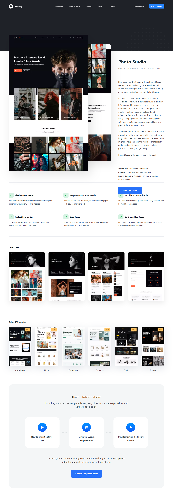
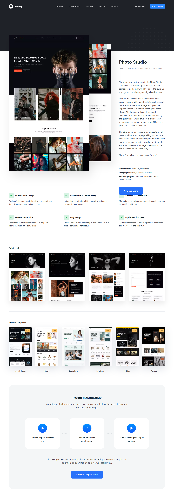

Projects

These projects are developed using a combination of HTML, CSS, JavaScript, and Bootstrap.
API Projects
This projects are developed using a combination of HTML, CSS, JavaScript And API.
Wordpress Themes
 

These are the themes I have utilized in WordPress development.
Wordpress Editor
I utilize Elementor for building and customizing WordPress sites.
Plugins

I use side cart plugins to enhance the shopping cart functionality.
Used Servers

XAMPP and WP Local are commonly utilized for local development and testing environments.
Used Servers


XAMPP and WP Local are commonly utilized for local development and testing environments.